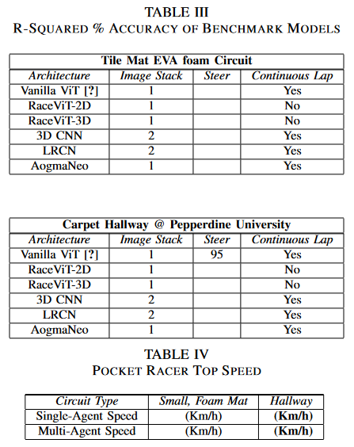

III. METHODOLOGY
A. Algorithm
Our algorithm, RaceViT, utilizes a variant of the Vision Transformer (ViT), with several improvements specific towards autonomous racing. First and foremost, the image tokens fed to the attention encoder network are processed horizontally in lieu of patches as a stack. By use of horizontal patches from the bottom of the image, the transformer is able to process images in the sequence at which the vehicle pro- gresses forward, making full use of the positional embedding found in the attention encoder. A further benefit to horizontal tokenizing of images is that it preserves spatial information otherwise lost when flattening patches of images originally

used in ViTs. Other improvements include the quantization of our model via Tensorflow lite and the pooling of datasets created by multiple vehicles during data collection.
B. Testbed Design
concerning issue with many indoor robotic testbeds is that they rely on motion capture systems as a means of providing vehicle state information, i.e. localization. A typical motion capture system (Vicon, Optitrack) is too expensive for many laboratories with a cost going upwards of 20K USD for a complete rig. While these systems are necessary for applications such as drones requiring tracking in space, it is not necessary for wheeled autonomous racing. As a result, a commercial webcam is retrofitted with a low distortion (1%) CS-mount lens to function as a overhead tracker, capable of tracking the vehicle at 90 FPS (in bright conditions) with an approximate error of less than 5cm for a 11 x 16 ft. circuit. The tracker when positioned on a ceiling can cover a typical indoor circuit with its wide 130 degrees field of view. It uses a sequence of frames to estimate the vehicle velocity and position using color based background subtraction. Finally, while Pocket Racer is designed for accessible use in classrooms with the foam tile circuit, it is also capable of autonomous racing within carpet hallways found in universities as shown in Table 2.
C. Chassis Design
The objective was to develop an low-cost and miniature platform for multi-agent autonomous racing. We utilized a single monocular camera paired with a Raspbery Pi Zero 2 W compute module to enable low-cost autonomy. Furthermore, the vehicle was converted from a AWD drivetrain to a RWD drivetrain by simply removing the center gear shaft to reduce inefficiencies due to gear friction, thereby allowing for longer run times. The vehicle also utilized taped radial tires for both the front and rear to maximize traction performance on the carpet surface. The chassis components housing the sensors were fully printable in less than 12 hours with a solid infill.
Prioritizing high speed performance, a high-torque brushless DC motor (3500Kv) was paired with a low gear ratio differential to provide the torque needed to maximize throttle response. The camera was mounted at the front as high as possible to maximize the field of view necessary for autonomy. This resulted in an accessible yet, high performance
vehicle with top speeds upwards of 26 km/h. We designed the platform to be accessible only using off the shelf components with the exception of a few 3D printable parts. These custom chassis components (i.e. body shell and battery mount) were designed to be fully printable in less than 12 hours.

IV. EXPERIMENTS & RESULTS (SKIP READING:TO-DO)
A. Data Collection
B. Training
The table below tabulates the results of our training experiments.
C. Deployment
We conduct several comparison experiments of two high speed vehicle maneuvers to validate and test our proposed RaceViT algorithm. We compare our RaceVit against other behavioral cloning algorithms by testing maneuvers at different speeds and evaluating the frequency of collisions.
1) Lane Keeping: We compare both our proposed Race-ViT against other working benchmarks for a single vehicle scenario involving lane keeping.
2) Overtaking: We demonstrate a scenario where a autonomous vehicle (#1) overtakes a slower second autonomous vehicle (#2) on both corners and straights.
V. DISCUSSION
A. Hardware Build
Initially, the brushed motor and integrated electronic speed controller (ESC) / receiver (RX) from the Ready-to-Run (RTR) chassis was utilized for the power train by inter cepting PWM signals from the Pulse Width Modulation (PWM) LED Driver, as this would lower costs associated with a brushless motor setup and a separate RC controller. However, the brushed motor proved to be problematic due to overheating over time, resulting in inconsistencies in vehicle speed despite a constant application of throttle. The receiver on-board the chassis also proved to be noisy for data collection, often spiking in values. Therefore, we replaced the RC controller with an off-the-shelf Bluetooth gamepad and utilized a brushless motor with a dedicated ESC.
B. Data Collection
A sufficient amount of data (200k images) was needed to ensure that the vehicles did not exhibit drift at a given position during test time. The amount of data needed de- pended on the complexity of the circuit as well as the rate at which the data was collected. For a simple oval circuit, a vehicle showed the capability to operate at 10 km/h without collisions with data collected for 15 minutes at 80hz, roughly the time it took to deplete one charge of the vehicle batteries. For large closed-loop hallways, at least 30-40 minutes of human demonstrations were needed, with a minimum of 20 demonstrations of overtaking maneuvers.
Prior work collected separate trajectories that demonstrated a return-to-lane action sequence in a lane departure event to solve the problem of covariate shift. However, our results showed that a data set size of 200k images proved suf- ficient to work in a closed-loop hallway environment, without any explicit lane markings or center lanes. A limitation with the data collection method was that the vehicles needed to be chased and driven by humans running after the vehicle, which proved to be labor intensive.
This resulted in the data collection phase consisting of only steering commands with a preset speed to offload the difficulty in also controlling throttle commands. The dataset also needed to be collected in consistent lighting during night time, which proved to be difficult due to transparent doors and changing lighting conditions. Finally, the dataset needed to be pruned for collisions and any external obstacles (i.e. humans) which altered the images.
C. Model Training
An image of 32 x 32 RGB pixels was tokenized into 32 horizontal layers as input to the RaceViT. The RaceViT consisted of four attention heads per layer for a total of 2 layers. Finally, the transformer layer was followed by two dense layers of 128 to output steering values for vehicle autonomy. Results showed that our proposed RaceViT architecture had the highest R-squared accuracy for both of the evaluated scenarios, when using two stacked images. Experimental tests showed that cropping the environment had a detrimental impact on the accuracy as the model utilized the entire scene to achieve autonomy.
An important observation we found was that the model required a large batch size to drive smoothly and generalize autonomous driving behavior. Smaller batch sizes improved accuracy at a cost of over-fitting the dataset such that the vehicle would exhibit highly noisy steering behavior, destabilizing the model. The batch size was maximized at 8000 images to fit the GPU memory limit of 11GB on a Nvidia RTX2080Ti. Within less than an hour of training, the model was able to drive at high speeds without collisions and exhibit overtaking maneuvers up to 21km/h on the carpet hallways within Pepperdine University.
D. Deployment
Model inference speed enabled with a high frame per second (FPS) mode on the Raspberry Pi v3 Camera was critical in insuring the vehicle’s ability to overtake and successfully exit corners at high speeds without collisions. The Raspberry Pi V3 camera showed a varying 80-90 FPS when streaming images at a size of 32 x 32 RGB pixels. While an image size of 80 x 80 proved to be optimal in terms of R squared accuracy, a lower pixel count allowed the RaceViT model to inference faster. Therefore, experiments were conducted to determine the image size that would allow for robust high speed autonomy without sacrificing accuracy. Results showed that beyond 32 x 32 pixels, the image proved to be too small to contain the necessary state information of its environment to drive reliably, resulting in collisions despite a sufficient dataset size.
Other deployment considerations involved the stacking of images. While stacking multiple images as input to the RaceViT model increased model performance as well as smoothed the steering actions, this proved to be computationally expensive during deployment as the delay in corner entry increased linearly with respect to the frame count. The model showed a certain capacity to be resilient to an increase in throttle speed, but resulted in wider turns, creating oscillatory behavior that would often destabilize the vehicle into a collision.
Results showed that operating the vehicle with a speed identical to the speed at which the human demonstrations were collected proved to be most successful in reducing the number of collisions for a continuous series of autonomous laps. Tests also showed that there was no performance loss with converting RGB to grayscale, suggesting the use of a monochrome camera for future work. Finally, model quantization using the tensorflow t flite op timization AP I reduced the model size to a quarter and increased the inference rate with no noticeable decrease in performance.